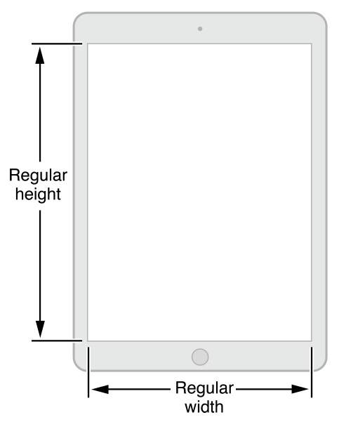
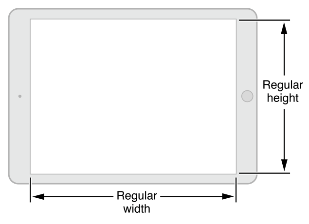
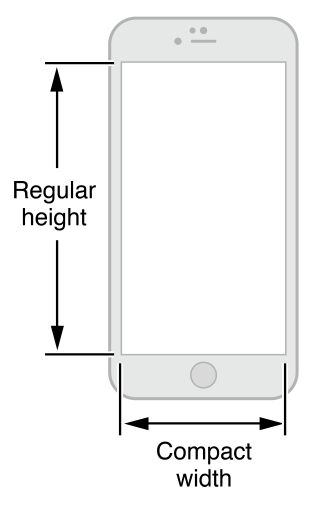
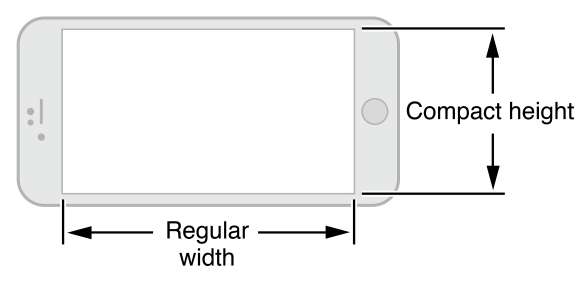
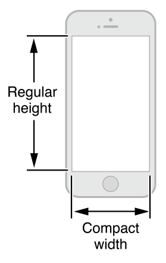
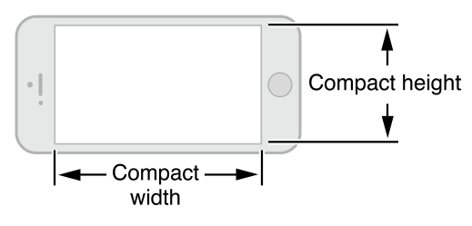
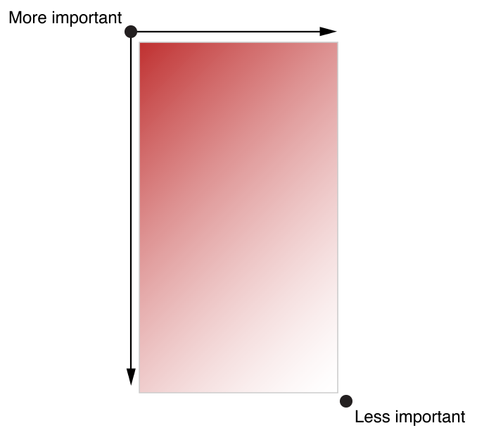
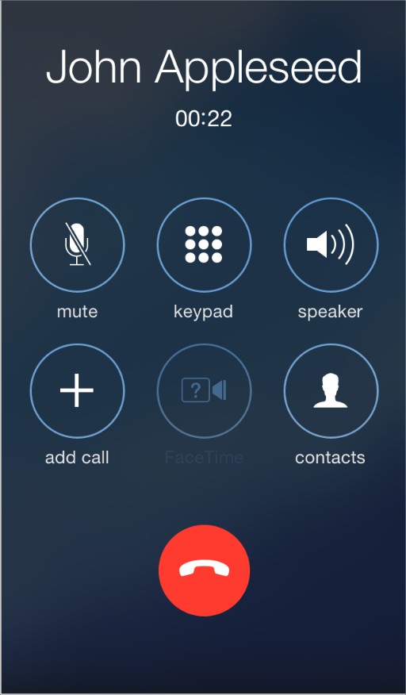
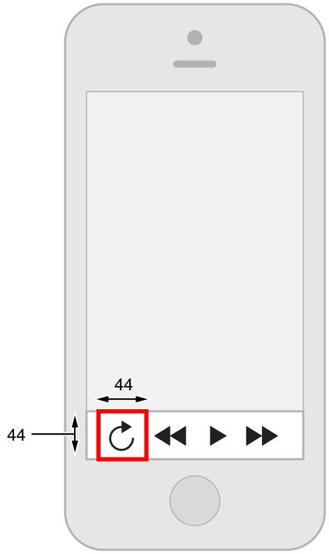
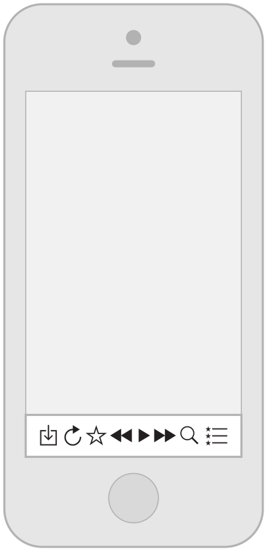

Adaptivity and Layout
Build In Adaptivity
People generally want to use their favorite apps on all their devices and in any orientation. In iOS 8 and later, you use size classes and Auto Layout to help you meet this expectation by defining how the layout of screens, view controllers, and views should adapt when the display environment changes. (The concept of display environment can refer to the entire device screen or only a portion of it, such as the area in a popover or the primary view in a split view controller.)
iOS defines two size classes: regular and compact. The regular size class is associated with expansive space and the compact size class is associated with constrained space. To characterize a display environment, you specify a horizontal size class and a vertical size class. As you might guess, an iOS device can use one set of size classes for portrait orientation and a different set of size classes for landscape.
iOS automatically makes various layout changes when the size classes of a display environment change. For example, when the vertical size class changes from compact to regular, navigation bars and toolbars automatically become taller.
When you rely on size classes to drive changes in the layout, your app can look great in any display environment. To learn how to work with size classes in Interface Builder, see Size Classes Design Help.
The following concrete examples can help you visualize how size classes characterize the display environments of various devices. For example, iPad uses the regular size class in both dimensions and in both orientations. In other words, the iPad display environment is always horizontally and vertically regular.
The size classes of iPad in portrait

The size classes of iPad in landscape

The display environment of iPhone can vary depending on the device and its orientation.

In portrait, iPhone 6 Plus uses the compact horizontal and regular vertical size classes.
In landscape, iPhone 6 Plus uses the regular horizontal and compact vertical size classes.

All other iPhone models, including iPhone 6, use the same sets of size classes.

In portrait, iPhone 6, iPhone 5, and iPhone 4s use the compact horizontal and regular vertical size classes.
In landscape, these devices use the compact size class in both the horizontal and vertical dimensions.

Provide a Great Experience in Each Environment
When you take advantage of adaptivity, you can ensure that your UI responds appropriately to changes in the display environment. Follow these guidelines to give people a great experience on all devices and orientations.
Maintain focus on the primary content in all environments. This is your highest priority. People use your app to view and interact with the content they care about. Changing the focus when the environment changes can disorient people and make them feel they’ve lost control over the app.
Avoid gratuitous changes in layout. A comparable experience in all environments lets people maintain their usage patterns when they rotate a device or run your app on a different device. For example, if you use a grid to display images in a horizontally regular environment, you don’t have to display the same information in a list in a horizontally compact environment, although you might adjust the dimensions of the grid.
Be straightforward if your app runs in only one orientation. People expect to use your app in different orientations, and it’s best when you can fulfill that expectation. But if it’s essential that your app run in only one orientation, you should:
Avoid displaying a UI element that tells people to rotate the device. Running in the supported orientation clearly tells people to rotate the device, if required, without adding unnecessary clutter to the UI.
Support both variants of an orientation. For example, if an app runs only in landscape, people should be able to use it whether they’re holding the device with the Home button on the right or on the left. And if people rotate the device 180 degrees while using the app, it’s best if the app responds by rotating its content 180 degrees.
If your app interprets changes in device orientation as user input, handle rotation in app-specific ways. For example, a game that lets people move game pieces by rotating the device can’t respond to device rotation by rotating the screen. In a case like this, you should launch in both variants of the required orientation and allow people to switch between the variants until they start the main task of the app. As soon as people begin the main task, begin responding to device movement in app-specific ways.
Use Layout to Communicate
Layout encompasses more than just how UI elements look on an app screen. With your layout, you show users what’s most important, what their choices are, and how things are related.
Make it easy to focus on the main task by elevating important content or functionality. Some good ways to do this are to place principal items in the upper half of the screen and—in left-to-right cultures—near the left side of the screen:

Use visual weight and balance to show users the relative importance of onscreen elements. Large items catch the eye and tend to appear more important than smaller ones. Larger items are also easier for users to tap, which makes them especially useful in apps—such as Phone and Clock—that users often use in distracting surroundings.

Use alignment to ease scanning and communicate groupings or hierarchy. Alignment tends to make an app look neat and organized and it gives users places to focus while they scroll through screenfuls of information. Indentation and alignment of different information groups indicate how the groups are related and make it easier for users to find specific items.
Make sure that users can understand primary content at its default size. For example, users shouldn’t have to scroll horizontally to read important text, or zoom to see primary images.
Be prepared for changes in text size. Users expect most apps to respond appropriately when they choose a different text size in Settings. To accommodate some text-size changes, you might need to adjust the layout; for more information about displaying text in your app, see Text Should Always Be Legible.
As much as possible, avoid inconsistent appearances in your UI. In general, elements that have similar functions should also look similar. People often assume that there must be a reason for the inconsistencies they notice, and they’re apt to spend time trying to figure it out.
Make it easy for people to interact with content and controls by giving each interactive element ample spacing. Give tappable controls a hit target of about 44 x 44 points.
Recommended

Not Recommended

Copyright © 2014 Apple Inc. All rights reserved. Terms of Use | Privacy Policy | Updated: 2014-09-17